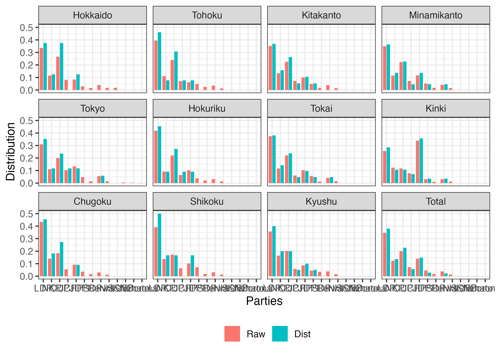
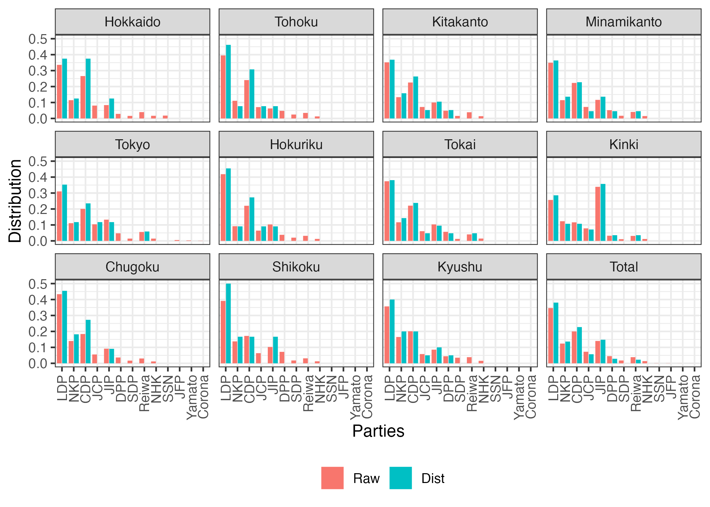

library(PRcalc)
library(tidyverse)Seat allocation
Import sample dataset
The first column contains the names of political parties, and the subsequent columns contain the respective number of votes for each party.
# Japanese upper house election in 2019
# Number of blocks = 1 (national block)
data("jp_upper_2019")
jp_upper_2019 Party Vote
1 自民 17712373
2 公明 6536336
3 立憲 7917721
4 維新 4907844
5 共産 4483411
6 国民 3481078
7 れいわ 2280253
8 社民 1046012
9 N国 987885
10 安楽死 269052
11 幸福 202278
12 オリーブ 167897
13 労働者 80055# Japanese lower house election in 2019
# Number of blocks = 11 (regional blocks)
data("jp_lower_2021")
jp_lower_2021 Party Hokkaido Tohoku Kitakanto Minamikanto Tokyo Hokuriku Tokai
1 自民 863300 1628233 2172065 2590787 2000084 1468380 2515841
2 公明 294371 456287 823930 850667 715450 322535 784976
3 立憲 682913 991505 1391149 1651562 1293281 773076 1485947
4 共産 207189 292830 444115 534493 670340 225551 408606
5 維新 215344 258690 617531 863897 858577 361476 694630
6 国民 73621 195754 298056 384482 306180 133600 382734
7 社民 41248 101442 97963 124447 92995 71185 84220
8 れ新 102086 143265 239592 302675 360387 111281 273208
9 N党 42916 52664 87702 111298 92353 43529 98238
10 支なし 46142 0 0 0 0 0 0
11 第一 0 0 0 0 33661 0 0
12 やまと 0 0 0 0 16970 0 0
13 コロナ 0 0 0 0 6620 0 0
Kinki Chugoku Shikoku Kyushu
1 2407699 1352723 664805 2250966
2 1155683 436220 233407 1040756
3 1090666 573324 291871 1266801
4 736156 173117 108021 365658
5 3180219 286302 173826 540338
6 303480 113899 122082 279509
7 100980 52638 30249 221221
8 292483 94446 52941 243284
9 111539 36758 21285 98506
10 0 0 0 0
11 0 0 0 0
12 0 0 0 0
13 0 0 0 0Calculation
To calculate seat allocation using the prcalc() function, you need to specify the following: data (x), electoral magnitude (m), and allocation method (method). Below is an example of allocating 50 (m = 50) seats using the D’Hondt method (method = "dt") with the jp_upper_2019 dataset. In this case, the length of m is 1 because number of blocks is 1.
# Example of national block (D'Hondt/Jefferson method)
obj1 <- prcalc(jp_upper_2019, m = 50, method = "dt")
obj1Raw:
Party Vote
1 自民 17712373
2 公明 6536336
3 立憲 7917721
4 維新 4907844
5 共産 4483411
6 国民 3481078
7 れいわ 2280253
8 社民 1046012
9 N国 987885
10 安楽死 269052
11 幸福 202278
12 オリーブ 167897
13 労働者 80055
Result:
Party Vote
1 自民 18
2 公明 7
3 立憲 8
4 維新 5
5 共産 5
6 国民 3
7 れいわ 2
8 社民 1
9 N国 1
10 安楽死 0
11 幸福 0
12 オリーブ 0
13 労働者 0
Parameters:
Allocation method: D'Hondt (Jefferson) method
Extra parameter:
Threshold: 0
Magnitude: 50In a block system, you need to specify m for each block separately. Since jp_lower_2021 has 11 blocks, the length of m also needs to be 11.
# Example of regional block (D'Hondt/Jefferson method; 11 blocks)
obj2 <- prcalc(jp_lower_2021,
m = c(8, 13, 19, 22, 17, 11, 21, 28, 11, 6, 20),
method = "dt")
obj2Raw:
Party Hokkaido Tohoku Kitakanto Minamikanto Tokyo Hokuriku Tokai
1 自民 863300 1628233 2172065 2590787 2000084 1468380 2515841
2 公明 294371 456287 823930 850667 715450 322535 784976
3 立憲 682913 991505 1391149 1651562 1293281 773076 1485947
4 共産 207189 292830 444115 534493 670340 225551 408606
5 維新 215344 258690 617531 863897 858577 361476 694630
6 国民 73621 195754 298056 384482 306180 133600 382734
7 社民 41248 101442 97963 124447 92995 71185 84220
8 れ新 102086 143265 239592 302675 360387 111281 273208
9 N党 42916 52664 87702 111298 92353 43529 98238
10 支なし 46142 0 0 0 0 0 0
11 第一 0 0 0 0 33661 0 0
12 やまと 0 0 0 0 16970 0 0
13 コロナ 0 0 0 0 6620 0 0
Kinki Chugoku Shikoku Kyushu Total
1 2407699 1352723 664805 2250966 19914883
2 1155683 436220 233407 1040756 7114282
3 1090666 573324 291871 1266801 11492095
4 736156 173117 108021 365658 4166076
5 3180219 286302 173826 540338 8050830
6 303480 113899 122082 279509 2593397
7 100980 52638 30249 221221 1018588
8 292483 94446 52941 243284 2215648
9 111539 36758 21285 98506 796788
10 0 0 0 0 46142
11 0 0 0 0 33661
12 0 0 0 0 16970
13 0 0 0 0 6620
Result:
Party Hokkaido Tohoku Kitakanto Minamikanto Tokyo Hokuriku Tokai Kinki
1 自民 3 6 7 8 6 5 8 8
2 公明 1 1 3 3 2 1 3 3
3 立憲 3 4 5 5 4 3 5 3
4 共産 0 1 1 1 2 1 1 2
5 維新 1 1 2 3 2 1 2 10
6 国民 0 0 1 1 0 0 1 1
7 社民 0 0 0 0 0 0 0 0
8 れ新 0 0 0 1 1 0 1 1
9 N党 0 0 0 0 0 0 0 0
10 支なし 0 0 0 0 0 0 0 0
11 第一 0 0 0 0 0 0 0 0
12 やまと 0 0 0 0 0 0 0 0
13 コロナ 0 0 0 0 0 0 0 0
Chugoku Shikoku Kyushu Total
1 5 3 8 67
2 2 1 4 24
3 3 1 4 40
4 0 0 1 10
5 1 1 2 26
6 0 0 1 5
7 0 0 0 0
8 0 0 0 4
9 0 0 0 0
10 0 0 0 0
11 0 0 0 0
12 0 0 0 0
13 0 0 0 0
Parameters:
Allocation method: D'Hondt (Jefferson) method
Extra parameter:
Threshold: 0
Magnitude:
Hokkaido Tohoku Kitakanto Minamikanto Tokyo Hokuriku
8 13 19 22 17 11
Tokai Kinki Chugoku Shikoku Kyushu
21 28 11 6 20 {PRcalc} offers various allocation methods. Below is an example similar to the previous one, but with the allocation methods changed to the Hare-Niemeyer ("hn") method and the Sainte-Laguë method ("sl").
# Hare-Niemeyer method
obj3 <- prcalc(jp_lower_2021,
m = c(8, 13, 19, 22, 17, 11, 21, 28, 11, 6, 20),
method = "hn")
obj3Raw:
Party Hokkaido Tohoku Kitakanto Minamikanto Tokyo Hokuriku Tokai
1 自民 863300 1628233 2172065 2590787 2000084 1468380 2515841
2 公明 294371 456287 823930 850667 715450 322535 784976
3 立憲 682913 991505 1391149 1651562 1293281 773076 1485947
4 共産 207189 292830 444115 534493 670340 225551 408606
5 維新 215344 258690 617531 863897 858577 361476 694630
6 国民 73621 195754 298056 384482 306180 133600 382734
7 社民 41248 101442 97963 124447 92995 71185 84220
8 れ新 102086 143265 239592 302675 360387 111281 273208
9 N党 42916 52664 87702 111298 92353 43529 98238
10 支なし 46142 0 0 0 0 0 0
11 第一 0 0 0 0 33661 0 0
12 やまと 0 0 0 0 16970 0 0
13 コロナ 0 0 0 0 6620 0 0
Kinki Chugoku Shikoku Kyushu Total
1 2407699 1352723 664805 2250966 19914883
2 1155683 436220 233407 1040756 7114282
3 1090666 573324 291871 1266801 11492095
4 736156 173117 108021 365658 4166076
5 3180219 286302 173826 540338 8050830
6 303480 113899 122082 279509 2593397
7 100980 52638 30249 221221 1018588
8 292483 94446 52941 243284 2215648
9 111539 36758 21285 98506 796788
10 0 0 0 0 46142
11 0 0 0 0 33661
12 0 0 0 0 16970
13 0 0 0 0 6620
Result:
Party Hokkaido Tohoku Kitakanto Minamikanto Tokyo Hokuriku Tokai Kinki
1 自民 3 5 7 8 5 5 8 7
2 公明 1 1 3 2 2 1 3 4
3 立憲 2 3 4 5 4 3 5 3
4 共産 1 1 1 2 2 1 1 2
5 維新 1 1 2 3 2 1 2 10
6 国民 0 1 1 1 1 0 1 1
7 社民 0 0 0 0 0 0 0 0
8 れ新 0 1 1 1 1 0 1 1
9 N党 0 0 0 0 0 0 0 0
10 支なし 0 0 0 0 0 0 0 0
11 第一 0 0 0 0 0 0 0 0
12 やまと 0 0 0 0 0 0 0 0
13 コロナ 0 0 0 0 0 0 0 0
Chugoku Shikoku Kyushu Total
1 5 2 7 62
2 2 1 3 23
3 2 1 4 36
4 1 0 1 13
5 1 1 2 26
6 0 1 1 8
7 0 0 1 1
8 0 0 1 7
9 0 0 0 0
10 0 0 0 0
11 0 0 0 0
12 0 0 0 0
13 0 0 0 0
Parameters:
Allocation method: Hare-Niemeyer quota
Extra parameter:
Threshold: 0
Magnitude:
Hokkaido Tohoku Kitakanto Minamikanto Tokyo Hokuriku
8 13 19 22 17 11
Tokai Kinki Chugoku Shikoku Kyushu
21 28 11 6 20 # Sainte-Laguë/Webster method
obj4 <- prcalc(jp_lower_2021,
m = c(8, 13, 19, 22, 17, 11, 21, 28, 11, 6, 20),
method = "sl")
obj4Raw:
Party Hokkaido Tohoku Kitakanto Minamikanto Tokyo Hokuriku Tokai
1 自民 863300 1628233 2172065 2590787 2000084 1468380 2515841
2 公明 294371 456287 823930 850667 715450 322535 784976
3 立憲 682913 991505 1391149 1651562 1293281 773076 1485947
4 共産 207189 292830 444115 534493 670340 225551 408606
5 維新 215344 258690 617531 863897 858577 361476 694630
6 国民 73621 195754 298056 384482 306180 133600 382734
7 社民 41248 101442 97963 124447 92995 71185 84220
8 れ新 102086 143265 239592 302675 360387 111281 273208
9 N党 42916 52664 87702 111298 92353 43529 98238
10 支なし 46142 0 0 0 0 0 0
11 第一 0 0 0 0 33661 0 0
12 やまと 0 0 0 0 16970 0 0
13 コロナ 0 0 0 0 6620 0 0
Kinki Chugoku Shikoku Kyushu Total
1 2407699 1352723 664805 2250966 19914883
2 1155683 436220 233407 1040756 7114282
3 1090666 573324 291871 1266801 11492095
4 736156 173117 108021 365658 4166076
5 3180219 286302 173826 540338 8050830
6 303480 113899 122082 279509 2593397
7 100980 52638 30249 221221 1018588
8 292483 94446 52941 243284 2215648
9 111539 36758 21285 98506 796788
10 0 0 0 0 46142
11 0 0 0 0 33661
12 0 0 0 0 16970
13 0 0 0 0 6620
Result:
Party Hokkaido Tohoku Kitakanto Minamikanto Tokyo Hokuriku Tokai Kinki
1 自民 3 5 7 8 5 5 8 7
2 公明 1 2 3 2 2 1 3 4
3 立憲 2 3 4 5 4 3 5 3
4 共産 1 1 1 2 2 1 1 2
5 維新 1 1 2 3 2 1 2 10
6 国民 0 1 1 1 1 0 1 1
7 社民 0 0 0 0 0 0 0 0
8 れ新 0 0 1 1 1 0 1 1
9 N党 0 0 0 0 0 0 0 0
10 支なし 0 0 0 0 0 0 0 0
11 第一 0 0 0 0 0 0 0 0
12 やまと 0 0 0 0 0 0 0 0
13 コロナ 0 0 0 0 0 0 0 0
Chugoku Shikoku Kyushu Total
1 5 3 7 63
2 2 1 3 24
3 2 1 4 36
4 1 0 1 13
5 1 1 2 26
6 0 0 1 7
7 0 0 1 1
8 0 0 1 6
9 0 0 0 0
10 0 0 0 0
11 0 0 0 0
12 0 0 0 0
13 0 0 0 0
Parameters:
Allocation method: Sainte-Laguë (Webster) method
Extra parameter:
Threshold: 0
Magnitude:
Hokkaido Tohoku Kitakanto Minamikanto Tokyo Hokuriku
8 13 19 22 17 11
Tokai Kinki Chugoku Shikoku Kyushu
21 28 11 6 20 To check the list of various allocation methods provided by {PRcalc}, please click here.
Printing
print(obj2, show_total = FALSE) # Hide `Total` columnRaw:
Party Hokkaido Tohoku Kitakanto Minamikanto Tokyo Hokuriku Tokai
1 自民 863300 1628233 2172065 2590787 2000084 1468380 2515841
2 公明 294371 456287 823930 850667 715450 322535 784976
3 立憲 682913 991505 1391149 1651562 1293281 773076 1485947
4 共産 207189 292830 444115 534493 670340 225551 408606
5 維新 215344 258690 617531 863897 858577 361476 694630
6 国民 73621 195754 298056 384482 306180 133600 382734
7 社民 41248 101442 97963 124447 92995 71185 84220
8 れ新 102086 143265 239592 302675 360387 111281 273208
9 N党 42916 52664 87702 111298 92353 43529 98238
10 支なし 46142 0 0 0 0 0 0
11 第一 0 0 0 0 33661 0 0
12 やまと 0 0 0 0 16970 0 0
13 コロナ 0 0 0 0 6620 0 0
Kinki Chugoku Shikoku Kyushu
1 2407699 1352723 664805 2250966
2 1155683 436220 233407 1040756
3 1090666 573324 291871 1266801
4 736156 173117 108021 365658
5 3180219 286302 173826 540338
6 303480 113899 122082 279509
7 100980 52638 30249 221221
8 292483 94446 52941 243284
9 111539 36758 21285 98506
10 0 0 0 0
11 0 0 0 0
12 0 0 0 0
13 0 0 0 0
Result:
Party Hokkaido Tohoku Kitakanto Minamikanto Tokyo Hokuriku Tokai Kinki
1 自民 3 6 7 8 6 5 8 8
2 公明 1 1 3 3 2 1 3 3
3 立憲 3 4 5 5 4 3 5 3
4 共産 0 1 1 1 2 1 1 2
5 維新 1 1 2 3 2 1 2 10
6 国民 0 0 1 1 0 0 1 1
7 社民 0 0 0 0 0 0 0 0
8 れ新 0 0 0 1 1 0 1 1
9 N党 0 0 0 0 0 0 0 0
10 支なし 0 0 0 0 0 0 0 0
11 第一 0 0 0 0 0 0 0 0
12 やまと 0 0 0 0 0 0 0 0
13 コロナ 0 0 0 0 0 0 0 0
Chugoku Shikoku Kyushu
1 5 3 8
2 2 1 4
3 3 1 4
4 0 0 1
5 1 1 2
6 0 0 1
7 0 0 0
8 0 0 0
9 0 0 0
10 0 0 0
11 0 0 0
12 0 0 0
13 0 0 0
Parameters:
Allocation method: D'Hondt (Jefferson) method
Extra parameter:
Threshold: 0
Magnitude:
Hokkaido Tohoku Kitakanto Minamikanto Tokyo Hokuriku
8 13 19 22 17 11
Tokai Kinki Chugoku Shikoku Kyushu
21 28 11 6 20 print(obj2, prop = TRUE) # Show proportionRaw:
Party Hokkaido Tohoku Kitakanto Minamikanto Tokyo Hokuriku
1 自民 0.33602815 0.39513793 0.35191652 0.34943072 0.310239746 0.41826883
2 公明 0.11458003 0.11073126 0.13349259 0.11473316 0.110975852 0.09187427
3 立憲 0.26581489 0.24061742 0.22539303 0.22275336 0.200605159 0.22021111
4 共産 0.08064559 0.07106369 0.07195522 0.07208940 0.103978689 0.06424832
5 維新 0.08381981 0.06277863 0.10005196 0.11651755 0.133176762 0.10296663
6 国民 0.02865600 0.04750538 0.04829083 0.05185676 0.047492608 0.03805603
7 社民 0.01605524 0.02461784 0.01587190 0.01678471 0.014424767 0.02027709
8 れ新 0.03973563 0.03476740 0.03881854 0.04082310 0.055900838 0.03169845
9 N党 0.01670449 0.01278045 0.01420942 0.01501125 0.014325184 0.01239926
10 支なし 0.01796017 0.00000000 0.00000000 0.00000000 0.000000000 0.00000000
11 第一 0.00000000 0.00000000 0.00000000 0.00000000 0.005221271 0.00000000
12 やまと 0.00000000 0.00000000 0.00000000 0.00000000 0.002632274 0.00000000
13 コロナ 0.00000000 0.00000000 0.00000000 0.00000000 0.001026850 0.00000000
Tokai Kinki Chugoku Shikoku Kyushu Total
1 0.37391371 0.25671430 0.43364470 0.39141012 0.35689743 0.3465508289
2 0.11666607 0.12322153 0.13983978 0.13742054 0.16501499 0.1237998900
3 0.22084701 0.11628927 0.18379145 0.17184176 0.20085511 0.1999808408
4 0.06072855 0.07849061 0.05549641 0.06359837 0.05797618 0.0724963883
5 0.10323851 0.33908212 0.09178032 0.10234167 0.08567221 0.1400973237
6 0.05688336 0.03235772 0.03651280 0.07187691 0.04431699 0.0451292573
7 0.01251709 0.01076672 0.01687425 0.01780938 0.03507525 0.0177250610
8 0.04060520 0.03118520 0.03027671 0.03116951 0.03857341 0.0385558203
9 0.01460050 0.01189254 0.01178357 0.01253174 0.01561842 0.0138653861
10 0.00000000 0.00000000 0.00000000 0.00000000 0.00000000 0.0008029446
11 0.00000000 0.00000000 0.00000000 0.00000000 0.00000000 0.0005857553
12 0.00000000 0.00000000 0.00000000 0.00000000 0.00000000 0.0002953052
13 0.00000000 0.00000000 0.00000000 0.00000000 0.00000000 0.0001151986
Result:
Party Hokkaido Tohoku Kitakanto Minamikanto Tokyo Hokuriku
1 自民 0.375 0.46153846 0.36842105 0.36363636 0.35294118 0.45454545
2 公明 0.125 0.07692308 0.15789474 0.13636364 0.11764706 0.09090909
3 立憲 0.375 0.30769231 0.26315789 0.22727273 0.23529412 0.27272727
4 共産 0.000 0.07692308 0.05263158 0.04545455 0.11764706 0.09090909
5 維新 0.125 0.07692308 0.10526316 0.13636364 0.11764706 0.09090909
6 国民 0.000 0.00000000 0.05263158 0.04545455 0.00000000 0.00000000
7 社民 0.000 0.00000000 0.00000000 0.00000000 0.00000000 0.00000000
8 れ新 0.000 0.00000000 0.00000000 0.04545455 0.05882353 0.00000000
9 N党 0.000 0.00000000 0.00000000 0.00000000 0.00000000 0.00000000
10 支なし 0.000 0.00000000 0.00000000 0.00000000 0.00000000 0.00000000
11 第一 0.000 0.00000000 0.00000000 0.00000000 0.00000000 0.00000000
12 やまと 0.000 0.00000000 0.00000000 0.00000000 0.00000000 0.00000000
13 コロナ 0.000 0.00000000 0.00000000 0.00000000 0.00000000 0.00000000
Tokai Kinki Chugoku Shikoku Kyushu Total
1 0.38095238 0.28571429 0.45454545 0.5000000 0.40 0.38068182
2 0.14285714 0.10714286 0.18181818 0.1666667 0.20 0.13636364
3 0.23809524 0.10714286 0.27272727 0.1666667 0.20 0.22727273
4 0.04761905 0.07142857 0.00000000 0.0000000 0.05 0.05681818
5 0.09523810 0.35714286 0.09090909 0.1666667 0.10 0.14772727
6 0.04761905 0.03571429 0.00000000 0.0000000 0.05 0.02840909
7 0.00000000 0.00000000 0.00000000 0.0000000 0.00 0.00000000
8 0.04761905 0.03571429 0.00000000 0.0000000 0.00 0.02272727
9 0.00000000 0.00000000 0.00000000 0.0000000 0.00 0.00000000
10 0.00000000 0.00000000 0.00000000 0.0000000 0.00 0.00000000
11 0.00000000 0.00000000 0.00000000 0.0000000 0.00 0.00000000
12 0.00000000 0.00000000 0.00000000 0.0000000 0.00 0.00000000
13 0.00000000 0.00000000 0.00000000 0.0000000 0.00 0.00000000
Parameters:
Allocation method: D'Hondt (Jefferson) method
Extra parameter:
Threshold: 0
Magnitude:
Hokkaido Tohoku Kitakanto Minamikanto Tokyo Hokuriku
8 13 19 22 17 11
Tokai Kinki Chugoku Shikoku Kyushu
21 28 11 6 20 print(obj2, use_gt = TRUE) # use {gt} package| Party | Hokkaido | Tohoku | Kitakanto | Minamikanto | Tokyo | Hokuriku | Tokai | Kinki | Chugoku | Shikoku | Kyushu | Total |
|---|---|---|---|---|---|---|---|---|---|---|---|---|
| Raw | ||||||||||||
| 自民 | 863300 | 1628233 | 2172065 | 2590787 | 2000084 | 1468380 | 2515841 | 2407699 | 1352723 | 664805 | 2250966 | 19914883 |
| 公明 | 294371 | 456287 | 823930 | 850667 | 715450 | 322535 | 784976 | 1155683 | 436220 | 233407 | 1040756 | 7114282 |
| 立憲 | 682913 | 991505 | 1391149 | 1651562 | 1293281 | 773076 | 1485947 | 1090666 | 573324 | 291871 | 1266801 | 11492095 |
| 共産 | 207189 | 292830 | 444115 | 534493 | 670340 | 225551 | 408606 | 736156 | 173117 | 108021 | 365658 | 4166076 |
| 維新 | 215344 | 258690 | 617531 | 863897 | 858577 | 361476 | 694630 | 3180219 | 286302 | 173826 | 540338 | 8050830 |
| 国民 | 73621 | 195754 | 298056 | 384482 | 306180 | 133600 | 382734 | 303480 | 113899 | 122082 | 279509 | 2593397 |
| 社民 | 41248 | 101442 | 97963 | 124447 | 92995 | 71185 | 84220 | 100980 | 52638 | 30249 | 221221 | 1018588 |
| れ新 | 102086 | 143265 | 239592 | 302675 | 360387 | 111281 | 273208 | 292483 | 94446 | 52941 | 243284 | 2215648 |
| N党 | 42916 | 52664 | 87702 | 111298 | 92353 | 43529 | 98238 | 111539 | 36758 | 21285 | 98506 | 796788 |
| 支なし | 46142 | 0 | 0 | 0 | 0 | 0 | 0 | 0 | 0 | 0 | 0 | 46142 |
| 第一 | 0 | 0 | 0 | 0 | 33661 | 0 | 0 | 0 | 0 | 0 | 0 | 33661 |
| やまと | 0 | 0 | 0 | 0 | 16970 | 0 | 0 | 0 | 0 | 0 | 0 | 16970 |
| コロナ | 0 | 0 | 0 | 0 | 6620 | 0 | 0 | 0 | 0 | 0 | 0 | 6620 |
| Distribution | ||||||||||||
| 自民 | 3 | 6 | 7 | 8 | 6 | 5 | 8 | 8 | 5 | 3 | 8 | 67 |
| 公明 | 1 | 1 | 3 | 3 | 2 | 1 | 3 | 3 | 2 | 1 | 4 | 24 |
| 立憲 | 3 | 4 | 5 | 5 | 4 | 3 | 5 | 3 | 3 | 1 | 4 | 40 |
| 共産 | 0 | 1 | 1 | 1 | 2 | 1 | 1 | 2 | 0 | 0 | 1 | 10 |
| 維新 | 1 | 1 | 2 | 3 | 2 | 1 | 2 | 10 | 1 | 1 | 2 | 26 |
| 国民 | 0 | 0 | 1 | 1 | 0 | 0 | 1 | 1 | 0 | 0 | 1 | 5 |
| 社民 | 0 | 0 | 0 | 0 | 0 | 0 | 0 | 0 | 0 | 0 | 0 | 0 |
| れ新 | 0 | 0 | 0 | 1 | 1 | 0 | 1 | 1 | 0 | 0 | 0 | 4 |
| N党 | 0 | 0 | 0 | 0 | 0 | 0 | 0 | 0 | 0 | 0 | 0 | 0 |
| 支なし | 0 | 0 | 0 | 0 | 0 | 0 | 0 | 0 | 0 | 0 | 0 | 0 |
| 第一 | 0 | 0 | 0 | 0 | 0 | 0 | 0 | 0 | 0 | 0 | 0 | 0 |
| やまと | 0 | 0 | 0 | 0 | 0 | 0 | 0 | 0 | 0 | 0 | 0 | 0 |
| コロナ | 0 | 0 | 0 | 0 | 0 | 0 | 0 | 0 | 0 | 0 | 0 | 0 |
| Allocation method: D'Hondt (Jefferson) method | ||||||||||||
| Extra parameter: | ||||||||||||
| Threshold: 0 | ||||||||||||
summary(obj2) # summarize Party Raw Dist
1 自民 19914883 67
2 公明 7114282 24
3 立憲 11492095 40
4 共産 4166076 10
5 維新 8050830 26
6 国民 2593397 5
7 社民 1018588 0
8 れ新 2215648 4
9 N党 796788 0
10 支なし 46142 0
11 第一 33661 0
12 やまと 16970 0
13 コロナ 6620 0summary(obj2, prop = TRUE) # summarize with proportion Party Raw Dist
1 自民 0.346551 0.3807
2 公明 0.123800 0.1364
3 立憲 0.199981 0.2273
4 共産 0.072496 0.0568
5 維新 0.140097 0.1477
6 国民 0.045129 0.0284
7 社民 0.017725 0.0000
8 れ新 0.038556 0.0227
9 N党 0.013865 0.0000
10 支なし 0.000803 0.0000
11 第一 0.000586 0.0000
12 やまと 0.000295 0.0000
13 コロナ 0.000115 0.0000Visualization
plot(obj1)plot(obj2)
plot(obj2, angle = 90)
# Output only some parties
plot(obj2,
subset_p = c("自民", "公明", "立憲", "維新", "共産", "国民"))# Output only some district
plot(obj2,
subset_p = c("自民", "公明", "立憲", "維新", "共産", "国民"),
subset_b = c("Tokyo", "Kinki")) # Divide the facet by parties
plot(obj2,
subset_p = c("自民", "公明", "立憲", "維新", "共産", "国民"),
subset_b = c("Tokyo", "Kinki"),
by = "party")# Three columns
plot(obj2,
subset_p = c("自民", "公明", "立憲", "維新", "共産", "国民"),
subset_b = c("Tokyo", "Kinki"),
by = "party",
facet_col = 3)# Use different y-axis scales for each facet
plot(obj2,
subset_p = c("自民", "公明", "立憲", "維新", "共産", "国民"),
subset_b = c("Tokyo", "Kinki"),
by = "party",
facet_col = 3,
free_y = TRUE)Comparison
You can compare multiple prcalc ojbects using compare() function. prcalc objects must be grouped in a list structure using list() function.
compare(list(obj2, obj3, obj4)) Party Model1 Model2 Model3
1 自民 67 62 63
2 公明 24 23 24
3 立憲 40 36 36
4 共産 10 13 13
5 維新 26 26 26
6 国民 5 8 7
7 社民 0 1 1
8 れ新 4 7 6
9 N党 0 0 0
10 支なし 0 0 0
11 第一 0 0 0
12 やまと 0 0 0
13 コロナ 0 0 0A named list structure is also available.
list("Jefferson" = obj2,
"Hare-Niemeyer" = obj3,
"Webster" = obj4) |>
compare() Party Jefferson Hare-Niemeyer Webster
1 自民 67 62 63
2 公明 24 23 24
3 立憲 40 36 36
4 共産 10 13 13
5 維新 26 26 26
6 国民 5 8 7
7 社民 0 1 1
8 れ新 4 7 6
9 N党 0 0 0
10 支なし 0 0 0
11 第一 0 0 0
12 やまと 0 0 0
13 コロナ 0 0 0By using print() function with subset parameter, you can extract subset of the parties.
list("Jefferson" = obj2,
"Hare-Niemeyer" = obj3,
"Webster" = obj4) |>
compare() |>
print(subset = c("自民", "公明", "立憲", "共産", "維新")) Party Jefferson Hare-Niemeyer Webster
1 自民 67 62 63
2 公明 24 23 24
3 立憲 40 36 36
4 共産 10 13 13
5 維新 26 26 26If prop = TRUE, the proportion is displayed. It is also available to output tables in HTML format using use_gt = TRUE.
list("Jefferson" = obj2,
"Hare-Niemeyer" = obj3,
"Webster" = obj4) |>
compare() |>
print(prop = TRUE, use_gt = TRUE)| Party | Jefferson | Hare-Niemeyer | Webster |
|---|---|---|---|
| 自民 | 0.381 | 0.352 | 0.358 |
| 公明 | 0.136 | 0.131 | 0.136 |
| 立憲 | 0.227 | 0.205 | 0.205 |
| 共産 | 0.057 | 0.074 | 0.074 |
| 維新 | 0.148 | 0.148 | 0.148 |
| 国民 | 0.028 | 0.045 | 0.040 |
| 社民 | 0.000 | 0.006 | 0.006 |
| れ新 | 0.023 | 0.040 | 0.034 |
| N党 | 0.000 | 0.000 | 0.000 |
| 支なし | 0.000 | 0.000 | 0.000 |
| 第一 | 0.000 | 0.000 | 0.000 |
| やまと | 0.000 | 0.000 | 0.000 |
| コロナ | 0.000 | 0.000 | 0.000 |
Visualization
plot() function is a method of prcalc_compare class. Its return value is ggplot object.
list("Jefferson" = obj2,
"Hare-Niemeyer" = obj3,
"Webster" = obj4) |>
compare() |>
plot()
If facet = TRUE, the plot is separated by parties.
list("Jefferson" = obj2,
"Hare-Niemeyer" = obj3,
"Webster" = obj4) |>
compare() |>
plot(facet = TRUE)
If facet = TRUE, you can adjust number of columns and y-axis scale using facet_col and free_y parameters, respectively.
list("Jefferson" = obj2,
"Hare-Niemeyer" = obj3,
"Webster" = obj4) |>
compare() |>
plot(subset_p = c("自民", "公明", "立憲", "共産", "維新",
"国民", "社民", "れ新", "N党"),
facet = TRUE, facet_col = 3, free_y = FALSE)